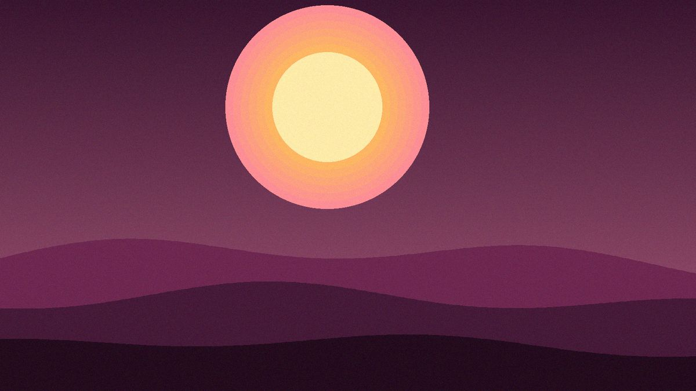

1. Imagen: mapa de bits frente a vectorial
La imagen de abajo es un mapa de bits: está formada por píxeles y pierde calidad al ampliarla. El logotipo de la cabecera es vectorial (SVG): se define con formas matemáticas y se escala sin pérdida.

Optimización: peso frente a calidad
| Versión | Formato | Dimensiones | Peso aprox. |
|---|---|---|---|
| Original sin optimizar | PNG | 1600×900 | 2,67 MB |
| Fallback | JPG calidad 80, progresivo | 1200×675 | 56,6 KB |
| Versión principal | WebP calidad 78 | 1200×675 | 11,9 KB |
| Versión móvil | WebP calidad 75 | 480×270 | 2,4 KB |
Se ha reducido el tamaño de píxeles al máximo que se muestra y se ha usado un formato con compresión con pérdida moderada. El navegador elige la versión con <picture> y srcset.
2. Audio HTML5
El elemento <audio> con controls reproduce un archivo. El contenedor (MP3, OGG) es el «envoltorio» del archivo y el códec (MP3, Vorbis) es el algoritmo que comprime el sonido.
Melodía sintetizada de unos 8 segundos (MP3 a 96 kbps y OGG Vorbis).
3. Vídeo HTML5
El elemento <video> ofrece dos fuentes: MP4 (contenedor MP4, códec H.264) y WebM (contenedor WebM, códec VP9). El navegador usa la primera que pueda reproducir.
Animación de 5 segundos a 24 fotogramas por segundo (120 fotogramas en total).
4. Animación: fotograma, capa y FPS
Una animación es una sucesión de fotogramas. Cada fotograma se compone de varias capas superpuestas (fondo, sol, montañas). Los FPS indican cuántos fotogramas se muestran por segundo.
Fotograma de 60 · Duración del bucle: s
5. Efectos básicos: brillo, tinte y transparencia
Prueba los tres efectos sobre la imagen. Se aplican con CSS (filter y opacity) sin modificar el archivo original.

filter: brightness(1) hue-rotate(0deg); opacity: 1;
6. Fuentes y licencias
Todos los recursos de esta página se han creado expresamente para el proyecto mediante código, por lo que no dependen de material de terceros.
| Recurso | Archivo | Autoría / fuente | Licencia |
|---|---|---|---|
| Paisaje (imagen) | paisaje.webp / .jpg | Creación propia · samonzfu (Python + Pillow) | CC BY 4.0 |
| Logotipo (SVG) | logo-vectorial.svg | Creación propia · samonzfu | CC BY 4.0 |
| Melodía (audio) | melodia.mp3 / .ogg | Creación propia · samonzfu (síntesis con Python) | CC BY 4.0 |
| Amanecer (vídeo) | amanecer.mp4 / .webm | Creación propia · samonzfu (Pillow + FFmpeg) | CC BY 4.0 |
Derechos de autor
- Derechos morales: irrenunciables e inalienables (reconocimiento de la autoría, integridad de la obra).
- Derechos patrimoniales: explotación económica (reproducción, distribución, comunicación pública, transformación). Se pueden ceder o licenciar.
- Entidades de gestión: como SGAE o CEDRO, gestionan los derechos patrimoniales de los autores y cobran por su uso.
Cierre: competencias adquiridas
- Distingo entre imagen de mapa de bits y vectorial, y conozco los formatos básicos para web (sección 1).
- Reconozco los derechos morales y patrimoniales, y sé qué son las entidades de gestión (sección 6).
- Sé optimizar una imagen para la web buscando equilibrio entre peso y calidad (sección 1).
- Sé integrar audio y vídeo en HTML5 con
<audio>y<video>, distinguiendo contenedor y códec (secciones 2 y 3). - Entiendo los conceptos de fotograma, capa y FPS en una animación (sección 4).
- Sé aplicar y reconocer efectos básicos de animación: brillo, tinte y transparencia (sección 5).
- Respeto los derechos de autor al usar material multimedia en mis propios proyectos (sección 6).